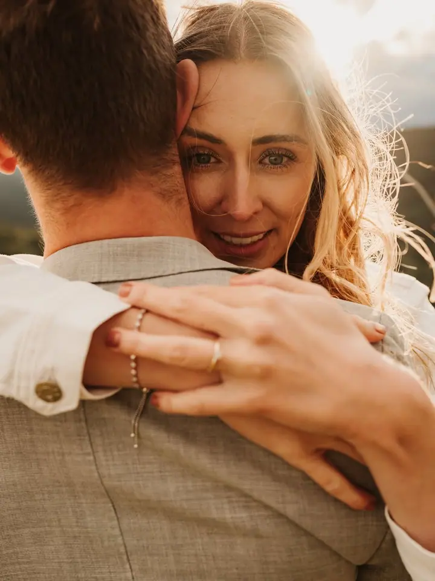
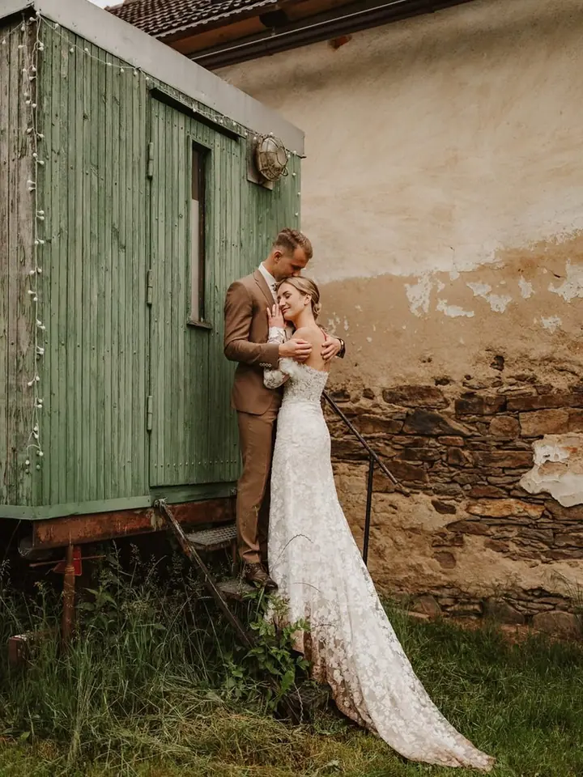
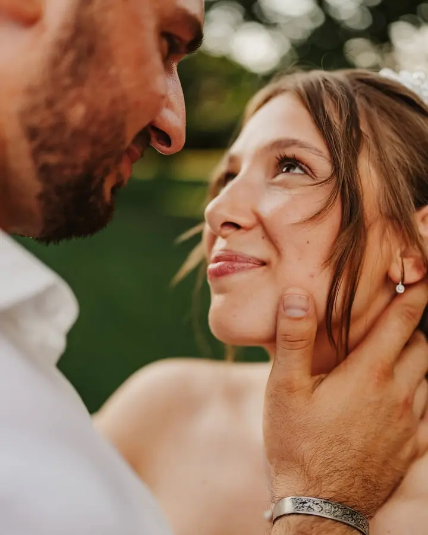

jedna
Svatby
Svatební den přichází jen jednou, a proto u něj chci být od začátku do konce. Před svatbou doporučuji osobní setkání, kde probereme harmonogram a všechny detaily.


Jmenuji se Jaromír Zubák, jsem fotograf z Lovosic a fotím hlavně svatby, ale také firmy, plesy a rodiny. Nejvíc mě baví chvíle, kdy se lidé přestanou hlídat a začnou se smát. A protože svatba je den plný emocí, nechávám místo i pro slzy dojetí.
Více o mně
Co fotím
jedna
Svatební den přichází jen jednou, a proto u něj chci být od začátku do konce. Před svatbou doporučuji osobní setkání, kde probereme harmonogram a všechny detaily.
dvě
Fotím firemní akce, večírky i maturitní plesy. Na oslavu můžu přivézt také fotobudku.
Fotím pro firmy, od portrétů a týmových fotek po produktové fotografie.
Rodiny a starší děti fotím venku v přírodě, kde je focení přirozenější a spíš připomíná příjemnou procházku. Fotím také těhotenské fotky.
Den, který přichází jen jednou.
Za objektivem
Jsem profesionální fotograf a nejčastěji mě potkáte na svatbách. Fotím ale také maturitní plesy, firemní akce, portréty a produkty. Každá zakázka je jiná, ale všude hledám to samé: skutečné emoce a lidi, kteří si den opravdu užívají.
Před svatbou se rád potkám s vámi osobně. Poznáte mě, v klidu probereme harmonogram a domluvíme detaily, abyste se mohli rozhodnout s jistotou. Rodiny a starší děti fotím nejraději venku v přírodě, kde focení plyne samo a děti zaujme hra víc než pózování.
Na oslavy můžu přivézt i fotobudku a dlouhodobě spolupracuji s dalšími dodavateli, s kameramanem, kapelou, DJ nebo moderátorem. Pokud něco z toho hledáte, rád vám někoho doporučím.
Jaromír
Napište mi přes formulář nebo na info@jaromirzubak.cz, o jaké focení máte zájem a kdy.
U svateb doporučuji schůzku předem. Poznáme se a projdeme spolu harmonogram dne i všechny detaily.
Jsem u toho, co se děje, a nechávám prostor přirozeným chvílím. Rodinné focení venku je spíš procházka než pózování.
Fotky vyberu, upravím a předám vám je hotové, abyste se k nim mohli vracet.
Portfolio
Otázky
Nejjednodušší je napsat na info@jaromirzubak.cz nebo vyplnit formulář na webu a vybrat, o jaké focení máte zájem. Ozvu se vám s volnými termíny.
Určitě, osobní setkání předem dokonce doporučuji. Popovídáme si o harmonogramu a domluvíme vše potřebné.
Rodiny a starší děti fotím venku v přírodě. Pro děti je to přirozenější a focení je pak spíš příjemná procházka.
Ano, fotobudku vám na akci rád přivezu. Spolupracuji také s kameramanem, kapelou, DJ a moderátorem, takže vám rád někoho doporučím.
Napište pár vět o tom, co si představujete. info@jaromirzubak.cz